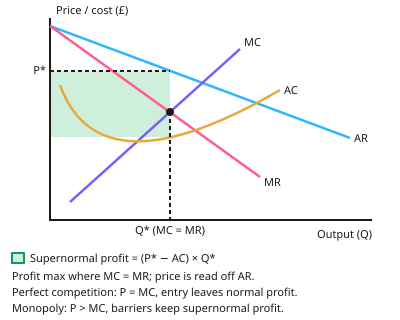

A-level Economics Year 13 · Topic 3
Business behaviour and the labour market
This topic links how firms behave in different market structures with how wages are set in the labour market.
We will review market structures, then look at the demand for and supply of labour, wage determination, economic rent and monopsony.
Then we evaluate trade unions, the minimum wage and other government interventions, and their effects on pay and inequality.
- 8 subtopics
- 322 questions
- Free: 3.1 notes and 7 questions
In this topic
- 3.1Market structures and firm behaviourFree below · 13 questions
- 3.2The labour market and inequalityOpen in Full Marks · 53 questions
- 3.3Demand for labour: derived demand, marginal revenue product theory and elasticity of labour demandOpen in Full Marks · 16 questions
- 3.4Labour supply: determinants, elasticity of supply, labour mobility and the gig economyOpen in Full Marks · 31 questions
- 3.5Wage determination in competitive labour markets, economic rent and transfer earningsOpen in Full Marks · 67 questions
- 3.6Monopsony and bilateral monopoly in labour marketsOpen in Full Marks · 62 questions
- 3.7Trade unions and collective bargaining: effects on wages, employment and productivityOpen in Full Marks · 25 questions
- 3.8Government intervention in the labour market: national minimum wage, living wage and wage policyOpen in Full Marks · 55 questions
3.1 · Free notes
Market structures and firm behaviour

Key points
- Firms maximise profit where MC = MR; other objectives include revenue maximisation, sales maximisation, survival and social objectives.
- Perfect competition: many firms, homogeneous products, perfect information and free entry; supernormal profit is competed away in the long run, leaving normal profit.
- Monopoly: one dominant firm, barriers to entry, and potential for supernormal profit in the long run, with higher prices and lower output than in competition, though economies of scale may offset this.
- Oligopoly: few large firms, interdependence, non-price competition, potential collusion and the kinked demand curve model.
- Price discrimination charges different prices to different consumers for the same good, requiring market power and separable markets.
- Contestability depends on barriers to entry and exit and sunk costs; contestable markets can behave competitively even with few firms.
In more detail
- Worked comparison: a perfectly competitive firm in long-run equilibrium sets P = MC = minimum AC; a monopoly sets P above MC and produces less.
- Worked game: two airlines each choose 'high fare' or 'low fare'. If both choose low, both earn less than if both stayed high, a prisoner's dilemma outcome.
- Contestability example: many online retail niches have low barriers to entry, so even large sellers face the threat of new rivals undercutting them.
- Exam tip: for each market structure cover number of firms, product type, barriers to entry, price-setting power and efficiency in the long run.
Practice
Market structures and firm behaviour: 7 questions
Pick an answer to check it, or open the answer for the explanation.
1. Firms maximise profit where:
- AC = AR
- MC = MR
- TR is highest
- MR = 0
Show answer
B: MC = MR. Producing beyond this point adds more cost than revenue.
2. In the long run, firms in perfect competition earn:
- Supernormal profit
- Normal profit
- Losses always
- Monopoly profit
Show answer
B: Normal profit. Free entry competes away supernormal profit.
3. What characterises an oligopoly?
- Many small firms
- A few large interdependent firms
- One firm only
- Perfect information
Show answer
B: A few large interdependent firms. Firms must consider rivals' likely reactions.
4. What is required for price discrimination?
- Perfect competition
- Market power and the ability to separate markets and prevent resale
- Identical prices
- Free entry
Show answer
B: Market power and the ability to separate markets and prevent resale. Different groups must also have different elasticities of demand.
5. What makes a market contestable?
- High sunk costs
- Low barriers to entry and exit
- A single dominant firm
- Price fixing
Show answer
B: Low barriers to entry and exit. The threat of entry disciplines incumbent firms.
6. In monopolistic competition, what happens to supernormal profits in the long run?
- They persist indefinitely
- They are competed away by new entrants, leaving normal profit
- They always increase
- Firms are forced to exit immediately
Show answer
B: They are competed away by new entrants, leaving normal profit. Relatively low barriers to entry allow new firms to enter and compete profits away.
7. What is a characteristic of a natural monopoly?
- Many small competing firms
- Very high fixed costs make it most efficient for a single firm to supply the whole market
- No barriers to entry
- Low fixed costs
Show answer
B: Very high fixed costs make it most efficient for a single firm to supply the whole market. Utilities such as water supply are often cited as examples.
Keep going in Full Marks
Full Marks has 13 questions on Market structures and firm behaviour (6 more than here), set out in practice levels. You also get notes and 3D models for all 8 subtopics of Business behaviour and the labour market, plus games, timed exams and past papers.